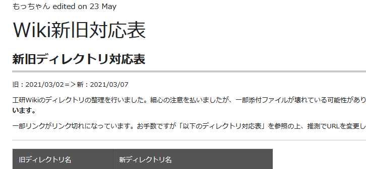

Lunatic電通生もっちゃんの部屋
21年度部長になってやったこと Part.1
Part.1 は、2021年2月～2021年12月までの内容となっています。2021年12月～2022年3月？までの内容はPart.2が生えるまでお待ちください。
この記事は、 UEC koken Advent Calender の記事です。相変わらず過疎っていますが、 こっちやこっちで工研生が活躍しているので、許してください。
さて、前回の記事は、りんりんさんの 部室の鍵をICであけられるようにした話 です。長年の工研鍵Felica対応のバトンがようやくゴールに運ばれましたね。すごいや!
このページのCSSダサすぎ問題は、永遠の未解決問題ということにしておいて、今回は、Advent参加初めてのお狐さんが、部長になって致死量のタスクを浴びながら、生活するというお話です。成仏してくれメンス…。
2021年1月~3月
１月に部長選挙が行われ、事実上の承認選挙となり部長に選出されました。昨年度新歓担当だったこともあり、来年度の新歓は対面でできるかなあ…などと考えている2月に…。
この時、kokenWikiに関する喧嘩（？）もとい、運用指針の食い違いが起こり、もともとの設計思想よりOBにも広く公開するという立場と、新たな設計思想であるアカウント制により部員のみ閲覧可にする立場に別れました。たまたまその火種が発生したタイミングのDiscordに立ち合ってしまい、半ば仲介として行うことに。この騒動は、２月に臨時部会をひらくまで長引き、結論としては、僅差で前者のOBにも広く公開するという立場に落ち着いた。ただし、ここでさまざまな条件が付け加えられたため、整備することとなる。
３月始め、Wiki内のディレクトリ大清掃大会が行われた。これは過去のWikiと今のWikiの運用設計が異なることによる変更で、ほぼすべてのページのカテゴリを変更した。8人がかりで行い、一部やらかした（GCPの1ファイルあたりの上限32MBを知らずに一部失われた…）が、なんとか再編することができた。
その後は、4月に新入生を迎え入れられるように、いろいろと準備をした。入部届だったり、後援会援助金の申請をだしたり、引継ぎの資料をつくったり、課外に提出する資料をつくったり……で、ここでまあいろいろと謎がでてくるわねえｗ なんで借用リストのうち７割ないんですかね？？？どうしようかなあ。
2021年4月-6月
まず、新入生を迎える前に、SlackとDiscordの運用指針についてまとめた。これは、Wikiだけセキュリティを強くしても、肝心のSlackがガバガバだったことに由来する。こちらについては、臨時部会を開いて調整が完了した。（これが12月現在になっても実行できていないんですよね…）
あと、部室汚すぎ案件。とりあえず、いらないものを「東34号館」の物置に移動させないとね…（後のフラグ）

まあ、まだオンライン部会しか開けてないけど、部室は使えるし、まあちょっと大変だけど１年生に加えて２年生も入ってくれて大盛況だなあ!!!!!
緊急事態宣言! 部室閉鎖!!
……はい？またですか？？？いい加減にしてください! と言いたかったんですけど、こればっかりは仕方がないので、従うことに。せっかく企画してた対面イベントも、秋葉原講習も全部パーに。うーーん。
ハード講習もソフト講習も何とか実行できて、よかったなあ。部室が開けば…
再開活動計画書を提出し、受理されて部室が再び使えるようになったのは、6月中旬。これまで長かったですね……。また感染症対策を徹底しなければなりませんが、 とりあえず活動できることに乾杯としましょう。（お酒は飲んでいません）

実はこの時（6月）、同時並行で、大学施設の「ピクトラボ」から、技術系サークルに対してお試しで使ってみるかというお話を打診された。ものつくりセンターは平日9時17時の利用ですし、ちょっと利用しずらいということもあり、この話に乗ってみることに。裏でお話をあわせることに。（これ以降はSNSなどへの掲載を禁止されているので、ここらへんで…。）